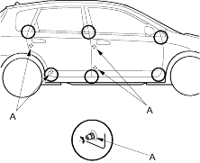
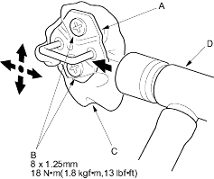

- Check that the door and body edges are parallel. If necessary, adjust the door cushions (A) to make the rear of the doors flush with the body.

- Apply touch-up paint to the hinge mounting bolts and around the hinges.
- Check for water leaks (see step 7 on page 20-163).
- Loosen the screws (B), then insert a shop towel (C) between the body and striker.

- Lightly tighten the screws.
- Wrap the striker with a shop towel, then adjust the striker by tapping it with a plastic hammer (D). Do not tap the striker too hard.
- Loosen the screws and remove the shop towel.
- Lightly tighten the screws.
- Hold the outer handle out and push the door against the body to be sure the striker allows a flush fit. If the door latches properly, tighten the screws and recheck.